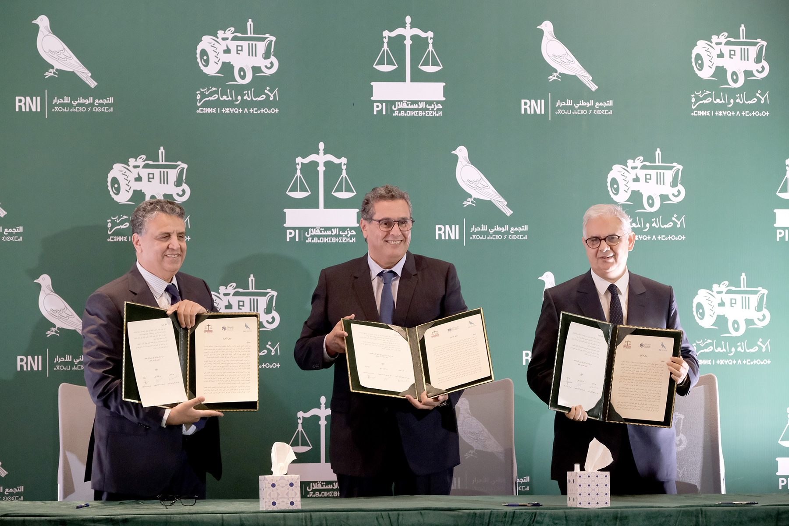
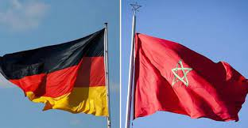

اجتماع مجلس الحكومة ليومه الخميس 30 دجنبر 2021
عقدت الحكومة، يومه الخميس 25 جمادى الأولى 1443 الموافق لـ30 دجنبر 2021، بتقنية التواصل المرئي، مجلسها الأسبوعي برئاسة السيد عزيز أخنوش، رئيس الحكومة، خصص للتداول والمصادقة على عدد من مشاريع المراسيم، واتفاقية دولية، ومقترحات تعيين في مناصب عليا طبقا للفصل 92 من الدستور.
read more
مشروع مرسوم رقم 2.21.1058 يقضي بتغيير المرسوم رقم 2.14.553 الصادر في فاتح رمضان 1436 (18 يونيو 2015) بتطبيق القانون رقم 05.12 المتعلق بتنظيم مهنة المرشد السياحي، قدمته السيدة فاطمة الزهراء عمور، وزيرة السياحة والصناعة التقليدية والاقتصاد الاجتماعي والتضامني.
ويندرج هذا المشروع في إطار متابعة الإصلاح التنظيمي المتعلق بهذه المهنة، وتفعيل التوجيهات الملكية السامية لصاحب الجلالة الملك محمد السادس نصره الله وأيده، من أجل إحداث فرص الشغل للشباب، ومَنْح الأشخاص الذين يتوفرون على تجربة في القطاع غير المهيكل فرصة الاندماج في القطاع المهيكل عبر تثمين خبراتهم ومهاراتهم.
وفي هذا السياق، وفي إطار سياسة اللاتمركز الإداري التي تَنْهَجُها الحكومة، يأتي المشروع لإعادة النظر في مسطرة تسوية وضعية فئة الأشخاص الذين يتوفرون على كفاءات ميدانية دون التوفر على شرط التكوين المطلوب لولوج مهنة المرشد السياحي، من خلال إحداث لجنة على المستوى الجهوي، باعتبارها أكثر دراية بمتطلبات السوق والأشخاص المتوفرين على الخبرة والكفاءة المهنية؛ وسيُعْهَد إليها بتقييم ووضع اللائحة النهائية للمترشحين الناجحين في امتحان الكفاءة المهنية.
ويُدْخِل المشروع، كذلك، مجموعة من التعديلات على المرسوم السالف الذكر، من قَبِيل نقل بعض صلاحيات الإدارة المركزية المكلفة بالسياحة إلى المسؤولين الجهويين، من أجل تمكينهم من القيام بدورهم على أكمل وجه، لاسيما اتخاذ القرارات اللازمة فيما يخص مَنْح أو سحب اعتماد مزاولة المرشد السياحي؛ بالإضافة إلى جعل المندوبيات التابعة لقطاع السياحة الفاعلَ الأول والرئيسي في تدبير جميع الإجراءات والمساطر؛ علاوة على حذف اللجنة التقنية الاستشارية للمرشدين السياحيين.

Le champ politique a foncièrement changé depuis les dernières législatives de septembre 2021.
Petit coup d’œil dans le rétroviseur. Juste avant cette consultation électorale, les affaires du Royaume étaient dirigées par une coalition gouvernementale cacophonique, affichant une unité cosmétique, mais au sein de laquelle les différentes composantes se crêpaient régulièrement le chignon. Aujourd’hui, une nouvelle majorité est en place. Composée du RNI, du PAM et du PI, elle se dit également soudée, comme celle qui l’a précédée d’ailleurs. De la poudre aux yeux ? Il n’y a pour l’instant aucune raison de le penser. Entre les accolades, les étreintes et les grands sourires en public, les leaders de ces trois formations politiques donnent à voir une sincérité presque touchante. Et semblent avoir une réelle volonté de travailler ensemble, en bonne intelligence, pour mener à bien les différents chantiers de développement du Royaume.
read more
La «Charte de la majorité», signée le lundi 6 décembre courant, consolide cette volonté politique. Le chef du gouvernement et président du RNI, Aziz Akhannouch, le rappelle à juste titre : cette charte représente un contrat politique et moral liant les composantes de cette coalition pour atteindre les objectifs tracés par le programme gouvernemental et ceux électoraux des partis de la majorité.
Avec une majorité confortable dans les deux chambres du Parlement, la coalition au pouvoir quadrille en tout cas parfaitement le microcosme politique et a les coudées franches pour dérouler sans accroc son programme. C’est le monde des bisounours car, en face, l’opposition est inaudible, incapable d’apporter une réponse politique forte.
Raison pour laquelle, même si des amendements ont été apportés au projet de Loi de Finances 2022, il est passé comme une lettre à la poste. Mais cette configuration politique, où la faiblesse de l’opposition vide le débat démocratique de sa pertinence, est un couteau à double tranchant.
Autant elle place la majorité dans une posture pratique pour conduire avec aisance les affaires du Royaume, autant elle la condamne à la réussite, puisque rien ne saurait justifier un quelconque retard ou un échec dans les différents dossiers structurants qui doivent être menés à bon port. Bref, le RNI, le PAM et le PI se la coulent douce. Ils ont un boulevard devant eux, avec aucune formation politique capable de leur savonner la route. Il ne faudrait juste pas que les ambitions personnelles et l’arithmétique politicienne viennent gripper cette union et cette entente si fièrement affichées.

Germany and Morocco: Bilateral relations
Politically as well as culturally and economically, the Kingdom of Morocco is an important link between North and South – the country is a central partner of the European Union and Germany in northern Africa. Germany and Morocco have maintained diplomatic relations since 1956. In the course of the last decade, Morocco has launched comprehensive reforms. The country plays a key role in preserving stability and promoting sustainable development in the region, proven not least by its diplomatic engagement in the Libyan peace process. With its newly appointed Personal Envoy of the UN Secretary-General Staffan de Mistura, the United Nations is endeavouring to find a solution to the Western Sahara issue.
read more
The German Government’s stance has remained unaltered for
decades. Germany is supporting the Personal Envoy in his efforts to find a just, lasting
political
solution acceptable to all based on UN Security Council Resolution 2602 (2021). In 2007, Morocco
made an important contribution to such a solution by presenting an autonomy plan.
Germany and Morocco enjoy significant economic and trade relations. In 2019, Germany ranked
seventh
among Morocco’s trading partners, with imports from Morocco amounting to 1.4 billion euro, and
exports to Morocco totalling 2.2 billion euro. There are nearly 300 companies with German equity
participation operating in Morocco, mainly concentrated in Casablanca and Tangier. Morocco is a
popular tourist destination. In 2019, approximately six percent of foreign tourists were from
Germany.
Germany is helping Morocco in its modernisation efforts and is one of the country's largest
bilateral donors, pledging funds to the tune of almost 1.2 billion euro in total in 2020.
German-Moroccan development cooperation focuses on sustainable economic development and jobs,
renewable energy and water management. Morocco is one of the countries in the G20 Compact with
Africa initiative aiming to improve conditions for private investment. To this end, the two
countries launched a German-Moroccan reform partnership in late November 2019. In 2020, Germany
supported Morocco with a comprehensive emergency assistance programme to mitigate the COVID-19
crisis.